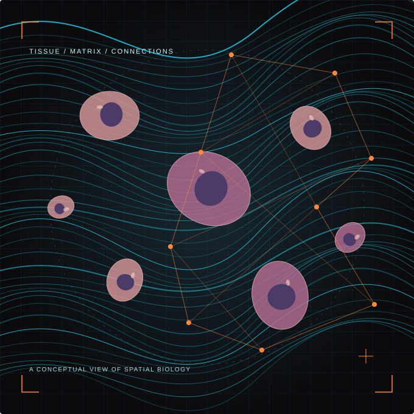

The tissue
around the tumour
Mapping the extracellular matrix and immune neighbourhoods to understand cancer in its spatial context.
Spatial biologyBarts Cancer Institute · London
We explore how the architecture of tissues shapes cancer — bringing spatial biology, experimental models and AI into the same picture.
mAIques Lab
Queen Mary University of London

Our science
From the organisation of collagen to the behaviour of a single cell, we ask how a tumour’s surroundings influence its next move.
Mapping the extracellular matrix and immune neighbourhoods to understand cancer in its spatial context.
Spatial biologyRecreating tissue architecture to test how mechanics and collagen organisation influence invasion.
Experimental modelsConnecting tissue morphology with molecular features through machine learning and digital pathology.
AI & pathologySelected research · Nature Communications
Our collaborative work explores how matrix mechano-sensing at the invasive front supports metastatic behaviour.
Read the studyThe structure of a tissue is part of its biology.
Our research perspectiveFrom the lab
Eve Guild and Bahar Sevgin join projects supported by Cancer Research UK and BBSRC.
Meet the teamAn Academy of Medical Sciences award supports our DERMIS project from 2026 to 2028.
Explore the awardResearch made possible by
Our fundingGood questions bring people together